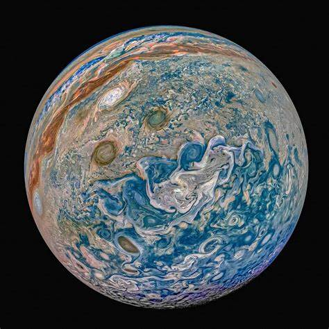
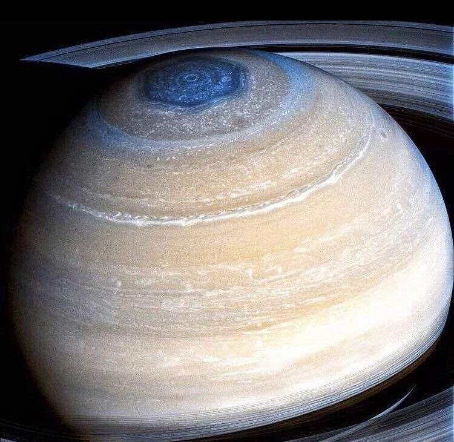
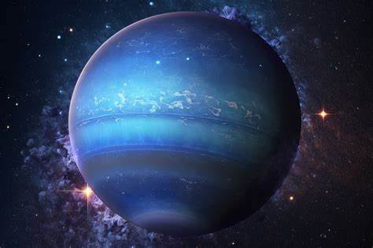
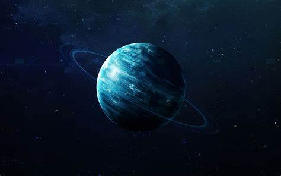

| Jupiter | Saturn | Neptune | Uranus | |
|---|---|---|---|---|
| Planets |  |  |  |  |
| Fact #1 | Jupiter has a mass of 1898(10^24) kg, being the planet with the largest mass. | Saturn has a mass of 568 (10^24) kg, the planet with the second largest mass. | Neptune has a mass of 102(10^24)kg, the planet with the third largest mass. | Uranus has a mass of 86.8(10^4)kg, the planet with the fourth largest mass. |
| Fact #2 | Jupiter has 95 moons, the planet with the second most amount of moons. | Saturn has 146 moons, the planet with the most amount of moons. | Neptune has 16 moons, the planet with the fourth largest amount of moons. | Uranus had 28 moons, the planet with the third largest amount of moons. |
| Fact #3 | Jupiter is 778.5(10^6) km from the sun. | Saturn is 1432.0(10^6)km from the sun. | Neptune is 4515.0(10^6)km from the sun. | Uranus is 2867.0(10^6)km from the sun. |
| Fact #4 | Jupiter has 9.9 hours as the length of its day. | Saturn has 10.7 hours as the length of it's day. | Neptune has 16.1 hours as the length of it's day. | Uranus has 17.2 hours as the length of the day. |
| Fact #5 | Jupiter's orbital period lasts 4331 days. | Saturn's orbital period lasts 10,747 days. | Neptune's orbital period lasts 59,800 days. | Uranus' orbital period lasts 30,589 days. |
| Fact #6 | The mean temperature on Jupiter is -110 degrees celsius. | The mean temperature on Saturn is -140 degrees celsius. | The mean temperature on Neptune is -200 degrees celsius. | The mean temperature on Uranus is -195 degrees celsius. |
| Fact #7 | The gravity on Jupiter is 23.1m/s^2 | The gravity on Saturn is 9.0 m/s^2 | The gravity on Neptune is 11.0 m/s^2 | The gravity on Uranus is 8.7 m/s^2 |